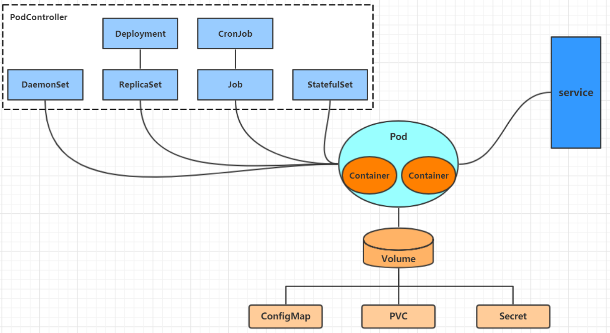

03 Kubernetes资源管理
三、Kubernetes资源管理¶
3.1 资源管理介绍¶
在kubernetes中，所有的内容都抽象为资源，用户需要通过操作资源来管理kubernetes。 kubernetes的本质上就是一个集群系统，用户可以在集群中部署各种服务，所谓的部署服务，其实就是在kubernetes集群中运行一个个的容器，并将指定的程序跑在容器中。 kubernetes的最小管理单元是pod而不是容器，所以只能将容器放在Pod中，而kubernetes一般也不会直接管理Pod，而是通过Pod控制器来管理Pod的。 Pod可以提供服务之后，就要考虑如何访问Pod中服务，kubernetes提供了Service资源实现这个功能。 当然，如果Pod中程序的数据需要持久化，kubernetes还提供了各种存储系统。  学习kubernetes的核心，就是学习如何对集群上的Pod、Pod控制器、Service、存储等各种资源进行操作。
3.2 YAML语言介绍¶
YAML是一个类似 XML、JSON 的标记性语言。它强调以数据为中心，并不是以标识语言为重点。因而YAML本身的定义比较简单，号称"一种人性化的数据格式语言"。
<lynch>
<age>15</age>
<address>Beijing</address>
</lynch>
lynch:
age: 15
address: Beijing
# 纯量, 就是指的一个简单的值，字符串、布尔值、整数、浮点数、Null、时间、日期
# 1 布尔类型
c1: true (或者True)
# 2 整型
c2: 234
# 3 浮点型
c3: 3.14
# 4 null类型
c4: ~ # 使用~表示null
# 5 日期类型
c5: 2018-02-17 # 日期必须使用ISO 8601格式，即yyyy-MM-dd
# 6 时间类型
c6: 2018-02-17T15:02:31+08:00 # 时间使用ISO 8601格式，时间和日期之间使用T连接，最后使用+代表时区
# 7 字符串类型
c7: lynch # 简单写法，直接写值 , 如果字符串中间有特殊字符，必须使用双引号或者单引号包裹
c8: line1
line2 # 字符串过多的情况可以拆成多行，每一行会被转化成一个空格
# 对象
# 形式一(推荐):
lynch:
age: 15
address: Beijing
# 形式二(了解):
lynch: {age: 15,address: Beijing}
# 数组
# 形式一(推荐):
address:
- 顺义
- 昌平
# 形式二(了解):
address: [顺义,昌平]
小提示： 1 书写yaml切记: 后面要加一个空格 2 如果需要将多段yaml配置放在一个文件中，中间要使用---分隔 3 下面是一个yaml转json的网站，可以通过它验证yaml是否书写正确 https://www.json2yaml.com/convert-yaml-to-json
3.3 资源管理方式¶
- 命令式对象管理：直接使用命令去操作kubernetes资源
kubectl run nginx-pod --image=nginx:1.17.1 --port=80
- 命令式对象配置：通过命令配置和配置文件去操作kubernetes资源
kubectl create/patch -f nginx-pod.yaml
- 声明式对象配置：通过apply命令和配置文件去操作kubernetes资源
kubectl apply -f nginx-pod.yaml
| 类型 | 操作对象 | 适用环境 | 优点 | 缺点 |
|---|---|---|---|---|
| 命令式对象管理 | 对象 | 测试 | 简单 | 只能操作活动对象，无法审计、跟踪 |
| 命令式对象配置 | 文件 | 开发 | 可以审计、跟踪 | 项目大时，配置文件多，操作麻烦 |
| 声明式对象配置 | 目录 | 开发 | 支持目录操作 | 意外情况下难以调试 |
3.3.1 命令式对象管理¶
- kubectl命令
kubectl是kubernetes集群的命令行工具，通过它能够对集群本身进行管理，并能够在集群上进行容器化应用的安装部署。kubectl命令的语法如下：
kubectl [command] [type] [name] [flags]
comand：指定要对资源执行的操作，例如create、get、delete type：指定资源类型，比如deployment、pod、service name：指定资源的名称，名称大小写敏感 flags：指定额外的可选参数
# 查看所有pod
kubectl get pod
# 查看某个pod
kubectl get pod pod_name
# 查看某个pod,以yaml格式展示结果
kubectl get pod pod_name -o yaml
kubectl api-resources
经常使用的资源有下面这些
| 资源分类 | 资源名称 | 缩写 | 资源作用 |
|---|---|---|---|
| 集群级别资源 | nodes | no | 集群组成部分 |
| namespaces | ns | 隔离Pod | |
| pod资源 | pods | po | 装载容器 |
| pod资源控制器 | replicationcontrollers | rc | 控制pod资源 |
| replicasets | rs | 控制pod资源 | |
| deployments | deploy | 控制pod资源 | |
| daemonsets | ds | 控制pod资源 | |
| jobs | 控制pod资源 | ||
| cronjobs | cj | 控制pod资源 | |
| horizontalpodautoscalers | hpa | 控制pod资源 | |
| statefulsets | sts | 控制pod资源 | |
| 服务发现资源 | services | svc | 统一pod对外接口 |
| ingress | ing | 统一pod对外接口 | |
| 存储资源 | volumeattachments | 存储 | |
| persistentvolumes | pv | 存储 | |
| persistentvolumeclaims | pvc | 存储 | |
| 配置资源 | configmaps | cm | 配置 |
| secrets | 配置 |
- 操作（comand）
kubernetes允许对资源进行多种操作，可以通过--help查看详细的操作命令
kubectl --help
经常使用的操作有下面这些：
| 操作 | 命令 | 翻译 | 作用 |
|---|---|---|---|
| 基本命令 | create | 创建 | 创建一个资源 |
| edit | 编辑 | 编辑一个资源 | |
| get | 获取 | 获取一个资源 | |
| patch | 更新 | 更新一个资源 | |
| delete | 删除 | 删除一个资源 | |
| explain | 解释 | 展示资源文档 | |
| 运行和调试 | run | 运行 | 在集群中运行一个指定的镜像 |
| expose | 暴露 | 暴露资源为Service | |
| desribe | 描述 | 显示资源内部信息 | |
| logs | 日志输出 | 输出容器在pod中的日志 | |
| attach | 附着 | 进入运行中的容器 | |
| exec | 执行 | 在容器中执行命令 | |
| cp | 复制 | 在pod内外复制文件 | |
| rollout | 发布 | 管理资源的发布 | |
| scale | 扩缩容 | 扩缩容资源 | |
| autoscale | 自动扩缩容 | 自动扩缩容资源 | |
| 高级命令 | apply | 应用 | 通过文件对资源进行配置 |
| labe | 标签 | 更新资源上的标签 | |
| annotate | 注释 | 更新资源上的注解 | |
| convert | 转换 | 将资源转换为最新版本 | |
| taint | 污点 | 更新资源上的污点 | |
| top | 统计 | 统计资源使用情况 | |
| cordon | 排障 | 标记节点为不可调度 | |
| uncordon | 恢复 | 标记节点为可调度 | |
| drain | 驱逐 | 将节点设置为不可调度 | |
| 其他命令 | cluster-info | 集群信息 | 显示集群信息 |
| api-versions | API版本 | 显示API版本 | |
| version | 版本 | 显示Server和Client的版本 | |
| config | 配置 | 修改kubeconfig文件 | |
| plugin | 插件 | 调用外部插件 | |
| help | 帮助 | 显示命令或子命令的帮助 |
下面以一个namespace / pod的创建和删除简单演示下命令的使用：
# 创建一个namespace
[root@master ~]# kubectl create namespace dev
namespace/dev created
# 获取namespace
[root@master ~]# kubectl get ns
NAME STATUS AGE
default Active 21h
dev Active 21s
kube-node-lease Active 21h
kube-public Active 21h
kube-system Active 21h
# 在此namespace下创建并运行一个nginx的Pod
[root@master ~]# kubectl run pod --image=nginx:latest -n dev
kubectl run --generator=deployment/apps.v1 is DEPRECATED and will be removed in a future version. Use kubectl run --generator=run-pod/v1 or kubectl create instead.
deployment.apps/pod created
# 查看新创建的pod
[root@master ~]# kubectl get pod -n dev
NAME READY STATUS RESTARTS AGE
pod 1/1 Running 0 21s
# 删除指定的pod
[root@master ~]# kubectl delete pod pod-864f9875b9-pcw7x
pod "pod" deleted
# 删除指定的namespace
[root@master ~]# kubectl delete ns dev
namespace "dev" deleted
3.3.2 命令式对象配置¶
命令式对象配置就是使用命令配合配置文件一起来操作kubernetes资源。 1. 创建一个nginxpod.yaml，内容如下：
apiVersion: v1
kind: Namespace
metadata:
name: dev
---
apiVersion: v1
kind: Pod
metadata:
name: nginxpod
namespace: dev
spec:
containers:
- name: nginx-containers
image: nginx:latest
[root@master ~]# kubectl create -f nginxpod.yaml
namespace/dev created
pod/nginxpod created
[root@master ~]# kubectl get -f nginxpod.yaml
NAME STATUS AGE
namespace/dev Active 18s
NAME READY STATUS RESTARTS AGE
pod/nginxpod 1/1 Running 0 17s
[root@master ~]# kubectl delete -f nginxpod.yaml
namespace "dev" deleted
pod "nginxpod" deleted
3.3.3 声明式对象配置¶
声明式对象配置跟命令式对象配置很相似，但是它只有一个命令apply。
# 首先执行一次kubectl apply -f yaml文件，发现创建了资源
[root@master ~]# kubectl apply -f nginxpod.yaml
namespace/dev created
pod/nginxpod created
# 再次执行一次kubectl apply -f yaml文件，发现说资源没有变动
[root@master ~]# kubectl apply -f nginxpod.yaml
namespace/dev unchanged
pod/nginxpod unchanged
【总结】 其实声明式对象配置就是使用apply描述一个资源最终的状态（在yaml中定义状态） 使用apply操作资源： - 如果资源不存在，就创建，相当于 kubectl create - 如果资源已存在，就更新，相当于 kubectl patch
扩展：kubectl可以在node节点上运行吗 ? kubectl的运行是需要进行配置的，它的配置文件是$HOME/.kube，如果想要在node节点运行此命令，需要将master上的.kube文件复制到node节点上，即在master节点上执行下面操作：
scp -r HOME/.kube node1: HOME/使用推荐: 三种方式应该怎么用 ? 创建/更新资源 使用声明式对象配置 kubectl apply -f XXX.yaml 删除资源 使用命令式对象配置 kubectl delete -f XXX.yaml 查询资源 使用命令式对象管理 kubectl get(describe) 资源名称